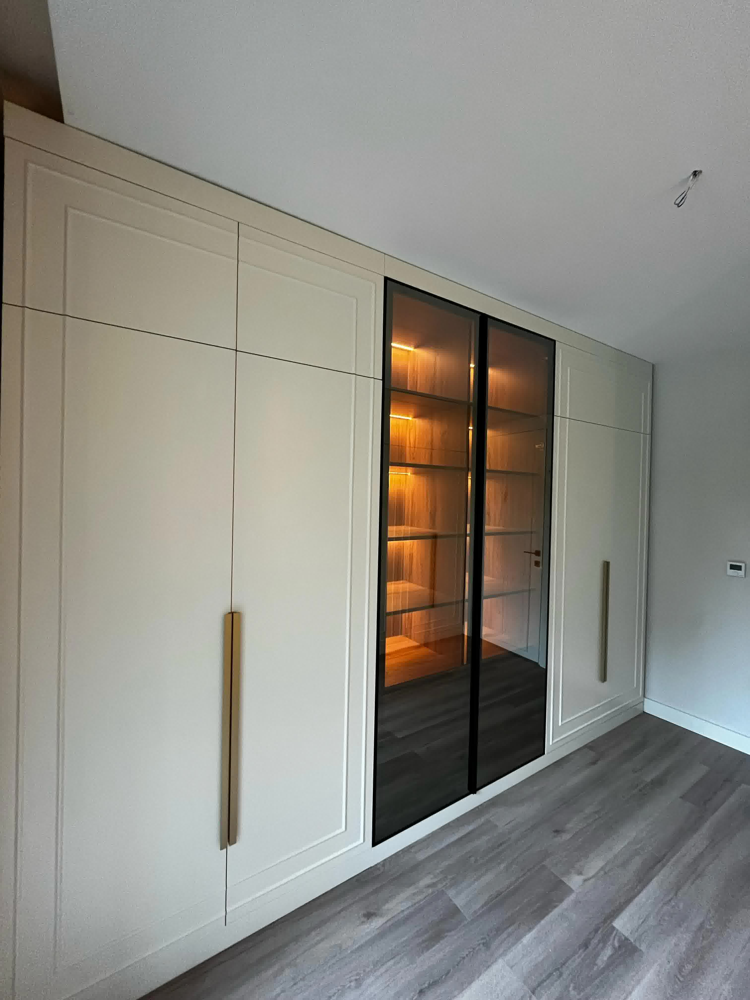

Kullanışlı & Estetik
Depolama Alanınızı Maksimuma Çıkarın
Kıyafetlerinizi kırışmadan, düzenli ve şık bir şekilde saklamanızı sağlayan akıllı iç aksesuarlar ve modern kapak çözümleri.

Yerden Tasarruf
Sürgülü Ray Dolap Sistemleri
Dar odalarda kapak açılma payı gerektirmeyen, alt ve üst çift frenli sessiz mekanizmalı, bronz aynalı veya lake kapaklı sürgülü dolaplar.

Modern Butik Seri
Füme Camlı Lüks Gardırop
İnce elektrostatik alüminyum profil çerçeveli temperli füme ve bronz cam kapaklar, dikey sensörlü gizli profil LED ışıklar.

Fonksiyonel İç Dizayn
Akıllı Dolap İçi Modülleri
Teleskopik pantolonluklar, kravatlıklar, kadife takı ve saat çekmeceleri, asansörlü yüksek askılıklar ve ayakkabılık rafları.